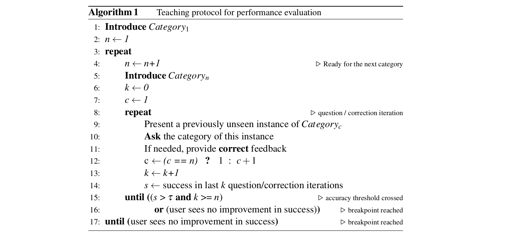
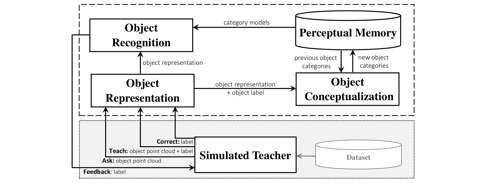

Project 1 : Interactive open-ended learning for 3D object recognition
Fig.1 The sequence of snapshots showing the RACE perception system performing object recognition and pose estimation and two human users interacting with the system. Download the pdf version
Assignment overview
Cognitive science revealed that humans learn to recognize object categories ceaselessly over time. This ability allows them to adapt to new environments, by enhancing their knowledge from the accumulation of experiences and the conceptualization of new object categories. Taking this theory as an inspiration, we seek to create an interactive object recognition system that can learn 3D object categories in an open-ended fashion. In this project, “open-ended” implies that the set of categories to be learned is not known in advance. The training instances are extracted from on-line experiences of a robot, and thus become gradually available over time, rather than being completely available at the beginning of the learning process.
Your goal for this assignment is to implement an interactive open-ended learning approach for 3D object recognition. In open-ended domains the set of categories to be learned is not predefined, therefore, it is not feasible to pre-program all necessary object categories for a robot. Instead, the robot should learn from online experiences, supported in the feedback from human teachers. This way, it is expected that the competence of the robot increases over time.
We break this assignment down into two parts. The first part is implementing an offline 3D object recognition system, which takes an object view as input and produces as output the category label (e.g., apple, mug, fork, etc). The second part is testing your approach in an online fashion by integrating your code into the RACE framework. Bear in mind that you should implement a method suitable for both offline and open-ended scenarios. To make your life easier, we offer a set of template codes for each assignment. In particular, students are provided with stub of the code and are expected to complete it. Please carefully read the detailed description of project below.
* Note: If you are not familiar with the concept of ROS, please follow the beginner level of ROS Tutorials. For all student, going over all basic beginner level tutorials is strongly recommended.
Policies
For this project, feel free to collaborate on solving the problem but please write your code individually. In particular, please do not copy code from other students.
Part I: Check your approach in an offline setting (50%)
To examine the performance of the proposed object recognition approach, students should use the provided K-fold cross-validation procedure. K-fold cross-validation is one of the most widely used methods for estimating the generalization performance of a learning algorithm. In this case, the k folds are randomly created by dividing the dataset into k equal sized subsets, where each subset contains examples from all the categories. In each iteration, a single fold is used for testing, and the remaining folds are used as training data. For k-fold cross-validation, we set K to 10, as is generally recommended in literature. This type of evaluation is not only useful for parameter tuning, but it also provides straightforward results for comparing the different approaches among themselves and possibly with other approaches described in the literature.
What we offer for this part of the assignment:
- A ROS based CPP code for 10 fold-cross validation
- Template cpp-based codes for both object representation, learning and recognition modules
Your tasks in this part of the assignment:
- Develop an optimize 3D object recognition algorithm capable of working in both offline and open-ended scenarios. You could think about the following options:
- Instance Based Learning (IBL) approaches
- Bayesian-based learning approaches
- Deep learning based object representation + IBL
- Deep learning based object representation + IBL
- One-class SVM (but it is computationally expensive)
- etc.
- Use a small-scaled RGB-D dataset for evaluating the performances of your approach. Both ModelNet10 and Restaurant Object datasets have a small number of classes with significant intra-class variation, which are suitable for performing extensive sets of offline experiments and parameter tuning.
Part II: Test your approach in open-ended scenarios (50%)
The off-line evaluation methodologies are not well suited to evaluate open-ended learning systems, because they do not abide to the simultaneous nature of learning and recognition and also those methodologies imply that the set of categories must be predefined. We therefore adopted a teaching protocol designed for experimental evaluation in open-ended learning.
A. Teaching protocol and simulated teacher
The idea is to emulate the interactions of a recognition system with the surrounding environment over long periods of time in a single context scenario (office, kitchen, etc.). The teacher follows a teaching protocol and interacts with the learning agent using three basic actions:
- Teach: used for introducing a new object category;
- Ask: used to ask the system what is the category of a given object view;
- Correct: used for providing corrective feedback in case of misclassification.
Teaching protocols determines which examples are used for training the algorithm, and which are used to test the algorithm. The protocol can be followed by a human teacher. However, replacing a human teacher with a simulated one makes it possible to conduct systematic, consistent and reproducible experiments for different approaches. It allows the possibility to perform multiple experiments and explore different experimental conditions in a fraction of time a human would take to carry out the same task. We therefore developed a simulated teacher to follow the protocol and autonomously interact with the system. For this purpose, the simulated teacher is connected to a large database of labelled object views. The complete process is summarized in Algorithm 1 and the overall system architecture is depicted in Fig. 2 .  The idea is that the simulated teacher repeatedly picks unseen object views from the currently known categories and presents them to the agent for testing. Inside the learning agent, the object view is recorded in the Perceptual Memory if it is marked as a training sample (i.e. whenever the teacher uses teach or correct instructions), otherwise it is dispatched to the Object Recognition module. The simulated teacher continuously estimates the recognition performance of the agent using a sliding window of size 3n iterations, where n is the number of categories that have already been introduced. If k, the number of iterations since the last time a new category was introduced, is less than 3n, all results are used. In case this performance exceeds a given classification threshold (t = 0.67, meaning accuracy is at least twice the error rate), the teacher introduces a new object category by presenting three randomly selected objects’ views. In this way, the agent begins with zero knowledge and the training instances become gradually available according to the teaching protocol. 
Fig.2 Interaction between the simulated teacher and the learning agent.
Breakpoint: In case the agent can not reach the classification threshold after a certain number of iterations (i.e. 100 iterations), the simulated teacher can infer that the agent is no longer able to learn more categories and therefore, terminates the experiment. It is possible that the agent learns all existing categories before reaching the breaking point. In such a case, it is not possible to continue the protocol, and the experiment is halted. In your report, this should be shown by the stopping condition, “lack of data’’.
Dataset: In this experiment, one of the largest available 3D object datasets, namely Washington RGB-D Object Dataset is used. It consists of 250,000 views of 300 objects and the objects are categorized into 51 categories.
What we offer for this part of the assignment:
- Provide a step-by-step guide to integrate your code into the simulated teacher test.
- Provide the simulated teacher code to assess the performance of your code in open-ended settings.
- Visualize the progress of the agent including the following items:
- Protocol Accuracy vs. Number of Iterations
- Number of Learned Category vs. Number of Iterations
- Global Classification Accuracy vs number of Learned Categories
Your tasks in this part of the assignment:
- Develop an optimize 3D object recognition algorithm capable of working in both offline and open-ended scenarios. You could think about the following options:
- Integrate your learning and recognition code into the simulated teacher test.
- Since the order in which categories are introduced may have an effect on the performance of the system, you have to perform 10 experiments and report the avg+std.
- Discuss the progress/behavior of the agent.
- Use a small-scaled RGB-D dataset for evaluating the performances of your approach. Both ModelNet10 and Restaurant Object datasets have a small number of classes with significant intra-class variation, which are suitable for performing extensive sets of offline experiments and parameter tuning.
Extra credit:
We will evaluate your object recognition approach using the same simulated teacher code. We will add 0.5 to final grade of the student who achieves the highest performance, 0.4 to the student who achieves second place, and 0.3 to the student who achieves third place. We will compute the performance of your algorithm ourselves (code that does not run will be disqualified from the contest). This reward is designed to encourage you to experiment with different algorithms and hyperparameter settings to obtain the best performance.
B. Test your approach in a real-world scenario
For this part of the project, a 3.5 minutes session has been recorded, where several users interacted with the RACE object perception system as shown in the above figure. During this session, users present objects to the system and provide their respective category labels. All raw data from the RGB-D sensor has been recorded in a rosbag, which can be used to test different approaches. For this part, we provide a step-by-step guide to integrate your code into the RACE framework and how to run the system. This an essential part of this assignment, and you will need this part in the second practical project. You should take a set of screenshots/videos of the output of your algorithm in the real-world scenario and use it in your project report.
Submission
At the end of each practical assignment a report (i.e., two pages IEEE conference format) has to be delivered. This practical assignment prepare students to do the final course project. Submit your assignment in a zip file named yourname_project1.zip. Please include your cleaned source code for both of part 1 and part 2. Please only submit these files and do not zip up the entire system and datest.